Teams & Groups / Fitness Competitions
Fitness Competitions
Build readiness, teamwork, and resilience through seasonal challenges and unit competition.
Visual overview
Strength in every season
From drill-meet events to individual assessments and a winter team course, every challenge gives cadets a new way to contribute and grow.

Competition areas
Choose a fitness focus
Explore the unit’s drill-meet team, two seasonal assessments, and winter Klondike Derby.